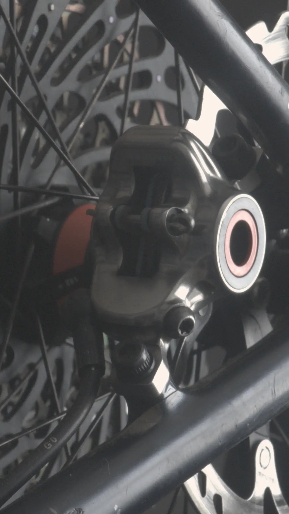
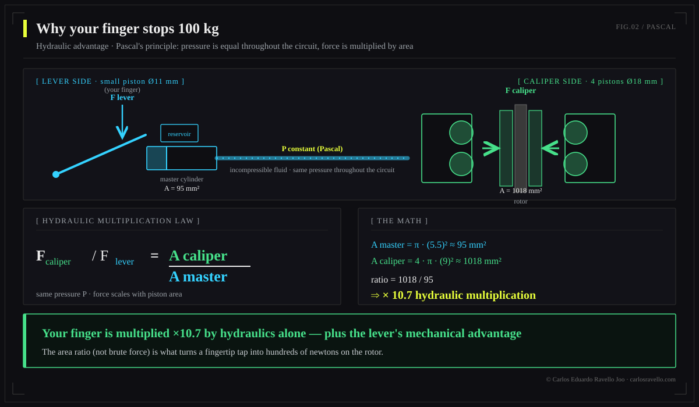

The 2025-2026 high end is dominated by 4-piston, 18 mm calipers and a clear shift toward mineral oil. In raw power, SRAM Maven and the new Brembo GR-PRO (April 2026, MotoGP heritage) lead. Shimano XTR M9220 (2025) fixed the wandering bite point with a low-viscosity mineral oil. Magura MT7, Hope Tech 4 V4 and TRP DHR Evo round out the top. The real choice isn't "the most powerful" but the one that balances power, modulation, heat dissipation and support for your discipline.
The market chapter of the Hydraulic Brake Encyclopedia. We don't sell brands here: we read the physics of each system (see DOT vs mineral and bleed vs service) so distributors, shops and riders decide on merit, not marketing.

2025-2026 high-end comparison
| Brake | Pistons | Fluid | Discipline | Key note |
|---|---|---|---|---|
| Brembo GR-PRO | 4 × 18 mm | Mineral (own) | DH / Enduro | Apr-2026 debut, MotoGP heritage, 3-position lever, 200-220 mm rotors |
| SRAM Maven | 4 × 18 mm | Mineral | DH / Enduro | Benchmark for raw stock power |
| Shimano XTR M9220 | 4 pistons | Mineral (low visc.) | Enduro / Trail | 2025: fixes wandering bite point and pad rattle |
| Magura MT7 | 4 pistons | Mineral (Royal Blood) | DH / Enduro | Benchmark power and modulation, highly adjustable |
| Hope Tech 4 V4 | 4 pistons | DOT | Enduro / DH | CNC-machined, rebuildable, fine lever adjust |
| TRP DHR Evo | 4 pistons | Mineral | DH | Proven on the DH World Cup circuit |
Manufacturer specs and specialist press (Jun-2026); "benchmark" power notes are qualitative, not a lab ranking.
What really changed this generation
The shift to mineral oil
The strongest 2025-2026 move is mineral oil consolidating at the top: Shimano, Magura and TRP already used it, SRAM shifted part of its range (DB8 and the Maven itself), and Brembo entered directly with its own mineral formula. Only Hope stays firmly on DOT. Mineral wins on practical thermal stability, not attacking paint and not being toxic. The detail lives in each formula —which is why you never mix them—.
Brembo enters MTB
That Brembo —the absolute reference in motorcycle and car braking— is launching a bicycle system (GR-PRO) marks a turning point: it brings competition-grade piston architecture and heat management to a market that historically improvised. Its downhill debut (Specialized Gravity) and premium price (~€800) position it as the DH segment's object of desire.
Shimano fixes its Achilles' heel
The XTR M9220 attacks the "wandering bite point" —that bite that drifted with heat— and pad rattle head-on, the two complaints that dogged Shimano for years. It does so with a low-viscosity mineral oil and a redesigned caliper, without losing its signature modulation.
More power: pistons or rotor?
A brake's power comes from two physical levers: the hydraulic one (more and larger pistons = more clamping force, Pascal's principle) and the geometric one (bigger rotor = more torque via radius and more surface to dissipate heat). For long descents the real limit is usually thermal: that's why a 200-220 mm rotor often outperforms an extra piston. The full physics is in the pillar.

Who each one is for
Downhill / bike park: Brembo GR-PRO, SRAM Maven or Magura MT7 with 220/200 mm rotors.
Enduro: XTR M9220, Hope Tech 4 V4 or TRP DHR Evo.
Trail / all-mountain: 2-piston versions of the same families, lighter.
Rebuildability and tuning: Hope (CNC, long-term spares).
BikeLab Studio.
Frequently Asked Questions
What is the most powerful MTB brake in 2026?
In raw power, SRAM Maven and the new Brembo GR-PRO lead, both 4-piston, 18 mm. The Maven is the stock-power benchmark; Brembo's GR-PRO (April 2026, MotoGP heritage) targets the same DH/enduro segment. Magura MT7 and Hope Tech 4 V4 sit very close.
What's new in the Shimano XTR M9220?
A low-viscosity mineral oil and redesigned caliper that fix the "wandering bite point" and pad rattle, Shimano's two long-standing complaints, without losing its modulation.
Is the Brembo GR-PRO worth it for a bike?
It brings MotoGP know-how to MTB: 4 × 18 mm pistons, own mineral oil, 200-220 mm / 2.3 mm rotors and a 3-position lever (~€800). A premium bet for DH/enduro; for trail or XC there are lighter, cheaper options.
Mineral or DOT in the 2026 high end?
The premium trend is mineral: Shimano, Magura, TRP and Brembo GR-PRO; SRAM moved part (DB8, Maven). Hope stays DOT. Mineral wins on stability, not harming paint and not being toxic. See DOT vs mineral oil.
More pistons or larger rotor?
Both help: more/larger pistons raise clamping force; a larger rotor raises torque and dissipates more heat. On long descents the limit is thermal, so a big rotor (200-220 mm) usually adds more than an extra piston.
References
- Pinkbike — Brembo GR-PRO launch (April 2026) and high-end coverage.
- BikeRadar — MTB brake comparisons 2025-2026 (Maven, XTR M9220, MT7).
- Manufacturer specs: SRAM, Shimano, Magura, Hope, TRP, Brembo.
- BikeLab Studio — Brake Encyclopedia (physics and fluid).